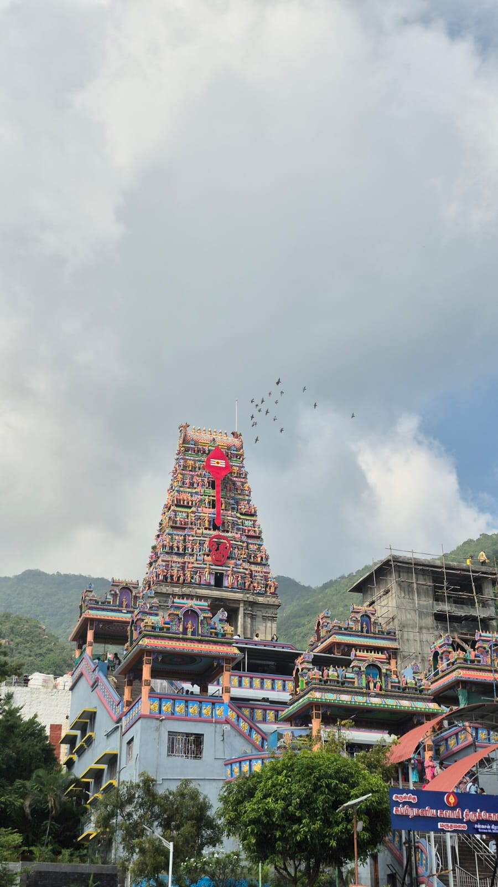

Temple · Hill
Marudamalai Murugan Temple
Ancient Murugan temple set atop a hill, offering panoramic views of the Western Ghats. Popular for early morning / evening darshan.
Don't miss: Scenic drive & sunset skies.